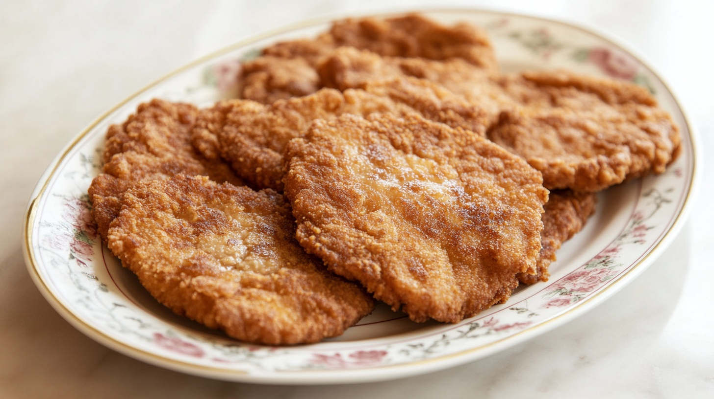
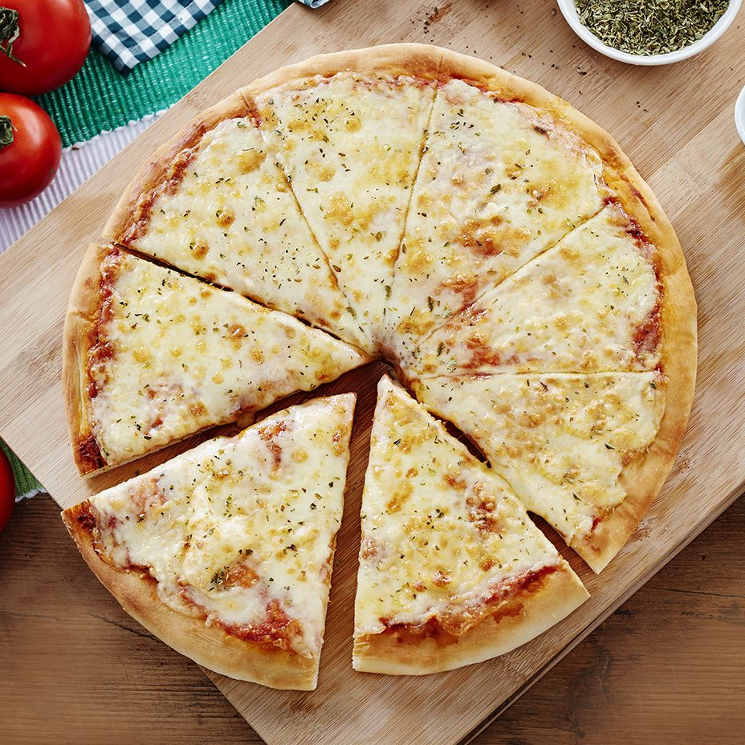
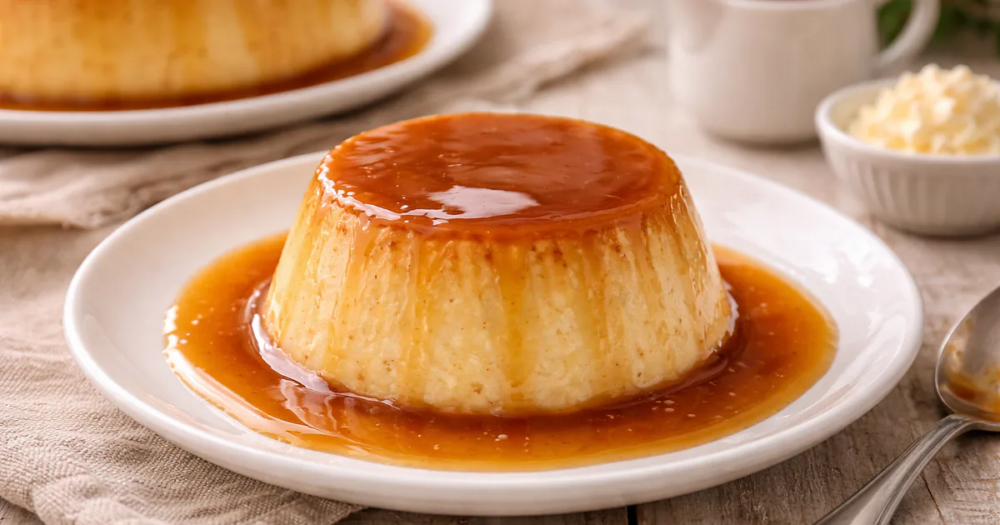

Recetas
Receta 1 - Milanesas al horno

Pasos
-
Condimentar las milanesas con sal, pimienta y ajo picado.
-
Pasarlas por huevo batido y luego por pan rallado.
- Colocarlas en una bandeja aceitada.
-
Hornear veinticinco minutos a fuego medio, dándolas vuelta a mitad
de cocción.
Receta 2 - Pizza de muzzarella

Pasos
-
Mezclar la harina con la levadura, el agua tibia, el aceite y la
sal hasta formar un bollo liso.
-
Dejar leudar el bollo tapado durante 20 minutos.
-
Estirar la masa sobre una pizzera y cubrirla con salsa de tomate y
muzzarella.
- Hornear quince minutos a fuego fuerte.
Receta 3 - Empanadas de pollo

Pasos
-
Rehogar la cebolla y el morrón picados y sumar el pollo cortado en
cubos.
-
Condimentar con sal, pimienta, pimentón y comino, y dejar enfriar
el relleno.
-
Rellenar las tapas de empanada y cerrarlas con repulgue.
-
Pintar con huevo y hornear veinte minutos hasta que estén doradas.
Receta 4 - Flan casero

Pasos
-
Hacer un caramelo con azúcar y un poco de agua, y volcarlo en la
budinera.
-
Batir los huevos con la leche y el azúcar sin hacer espuma.
-
Volcar la mezcla sobre el caramelo y tapar la budinera.
-
Cocinar a baño María en el horno durante una hora y dejar enfriar
antes de desmoldar.